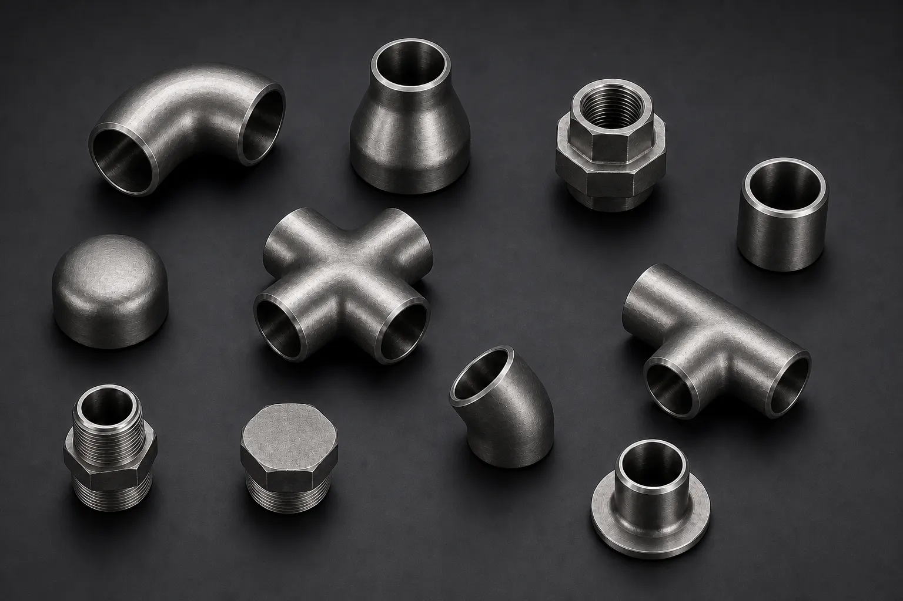

Gururaj Infradesigns is a trusted Nickel 200 and Nickel 201 Pipe Fittings Manufacturer and Supplier in India, offering ASTM B366 / ASME SB366 fittings in UNS N02200 and UNS N02201 grades for chemical processing, food processing, pharmaceutical, power generation, and caustic handling applications.
Nickel 200 and Nickel 201 Pipe Fittings are commercially pure nickel fittings widely used in industries that require excellent resistance to corrosive environments, caustic alkalis, and high-purity processing conditions. Their outstanding resistance to chemical attack, combined with good thermal and electrical conductivity, makes them suitable for critical applications across chemical processing, food manufacturing, power generation, and electronics industries. Gururaj Infradesigns is a trusted Nickel 200 Pipe Fittings Manufacturer in India and Nickel 201 Pipe Fittings Manufacturer in India, supplying premium-quality fittings designed for dependable performance and long service life.
Our range includes elbows, tees, reducers, pipe caps, stub ends, and crosses manufactured to international standards. Available in seamless, welded, and fabricated construction, Nickel 200 and Nickel 201 Pipe Fittings provide excellent corrosion resistance and material stability in demanding industrial environments.

Nickel 200 (UNS N02200) is a commercially pure wrought nickel grade containing a minimum nickel content of 99.0%. It offers excellent resistance to caustic solutions, reducing chemicals, and various corrosive environments while maintaining good mechanical properties.
Nickel 201 (UNS N02201) is the low-carbon version of Nickel 200. The reduced carbon content minimizes graphite precipitation at elevated temperatures, making Nickel 201 more suitable for applications above approximately 315°C. As part of our extensive range of Nickel Alloy Pipe Fittings, these grades are widely used in chemical processing plants, food handling systems, electronic manufacturing, and power generation facilities.
| Parameter | Details |
|---|---|
| Product | Nickel 200 / Nickel 201 Pipe Fittings |
| Grades | UNS N02200 (Nickel 200), UNS N02201 (Nickel 201) |
| Specifications | ASTM B366 / ASME SB366 |
| Dimensions | ASME/ANSI B16.9, ASME B16.28, MSS-SP-43 |
| Product Types | Elbow, Tee, Reducer, Pipe Cap, Stub End, Cross |
| Size – Seamless | 1/2" to 10" |
| Size – Welded | 1/2" to 48" |
| Type | Seamless, Welded, Fabricated |
| Schedule | SCH 5S, 10S, 10, 20, 40S, 40, STD, 60, 80S, 80, XS, 100, 120, 140, 160 & XXS |
| Certification | EN 10204 3.1 / MTC Available |
| Grade | UNS Number | Werkstoff No. | ASTM Specification | ASME Specification | DIN Equivalent |
|---|---|---|---|---|---|
| Nickel 200 | UNS N02200 | 2.4066 | ASTM B366 | ASME SB366 | Ni 99.2 |
| Nickel 201 | UNS N02201 | 2.4068 | ASTM B366 | ASME SB366 | LC-Ni 99 |
Equivalent grade references help engineers and buyers identify the same material across different international standards. Nickel 200 (UNS N02200) and Nickel 201 (UNS N02201) share similar corrosion resistance characteristics, with Nickel 201 being preferred for higher-temperature applications due to its lower carbon content.
Nickel 200 and Nickel 201 Pipe Fittings provide exceptional resistance to caustic alkalis and corrosive chemicals. This makes them highly suitable for chemical processing systems handling sodium hydroxide and similar compounds.
With a minimum nickel content of 99%, these fittings offer excellent material purity and consistent performance. Their purity makes them ideal for sensitive processing applications requiring contamination control.
Nickel 200 and 201 exhibit excellent thermal and electrical conductivity, allowing them to perform efficiently in heat transfer and electrical applications.
Nickel 201, with its lower carbon content, provides improved resistance to embrittlement at higher temperatures. This makes it particularly suitable for elevated-temperature service.
The combination of corrosion resistance, durability, and stable mechanical properties contributes to reduced maintenance requirements and lower lifecycle costs.
| Grade | C | Mn | Si | S | Cu | Fe | Ni |
|---|---|---|---|---|---|---|---|
| Nickel 200 (UNS N02200) | 0.15 Max | 0.35 Max | 0.35 Max | 0.01 Max | 0.25 Max | 0.40 Max | 99.0 Min |
| Nickel 201 (UNS N02201) | 0.02 Max | 0.35 Max | 0.35 Max | 0.01 Max | 0.25 Max | 0.40 Max | 99.0 Min |
| Property | Nickel 200 / 201 |
|---|---|
| Density | 8.9 g/cm³ |
| Melting Point | 1446°C (2635°F) |
| Tensile Strength | 462 MPa (67,000 psi) |
| Yield Strength (0.2% Offset) | 148 MPa (21,500 psi) |
| Elongation | 45% |
Nickel 200 and 201 Pipe Fittings are extensively used in chemical plants handling caustic alkalis, reducing chemicals, and corrosive process media. Their high nickel content ensures excellent resistance and long-term reliability.
The purity and corrosion resistance of these alloys make them suitable for food manufacturing systems where hygiene and material stability are important considerations.
Due to their excellent electrical conductivity and resistance to oxidation, these fittings are utilized in specialized electrical and electronic applications.
Power plants rely on Nickel 200 and 201 fittings in critical piping systems requiring dependable performance and resistance to aggressive service conditions.
The alloys are commonly used in pharmaceutical and specialty process industries where product purity and corrosion resistance are essential.
| Property | Nickel 200 | Nickel 201 |
|---|---|---|
| UNS Number | N02200 | N02201 |
| Nickel Content | 99.0% Min | 99.0% Min |
| Carbon Content | 0.15% Max | 0.02% Max |
| Elevated Temperature Service | Good | Excellent |
| Resistance to Graphitization | Moderate | Superior |
| Mechanical Properties | Similar | Similar |
| Caustic Resistance | Excellent | Excellent |
| Food Processing Applications | Excellent | Excellent |
| High-Temperature Applications | Limited | Preferred |
| Typical Use | General Corrosive Service | Elevated Temperature Service |
Nickel 200 Pipe Fittings are commonly selected for general corrosive applications requiring high-purity nickel. For elevated-temperature environments where carbon precipitation may become a concern, many industries prefer Nickel 201 Pipe Fittings due to their lower carbon content and improved thermal stability.
| Finish | Benefits |
|---|---|
| Pickled | Removes surface contaminants and improves corrosion resistance |
| Passivated | Enhances surface cleanliness and protection |
| Polished | Provides a smoother finish suitable for hygienic applications |
| Mill Finish | Suitable for standard industrial use |
Proper finishing helps maximize corrosion resistance and maintain long-term performance in demanding operating environments.
Gururaj Infradesigns supplies Nickel 200 and Nickel 201 Pipe Fittings in multiple sizes, schedules, and configurations to support chemical processing, food manufacturing, pharmaceutical, and power generation projects. Our products are supplied to EPC contractors, engineering companies, fabricators, and industrial buyers across India.
With a focus on product quality, technical support, and timely delivery, we help customers source dependable nickel alloy piping components that meet project specifications and operational requirements.
Quality remains an integral part of our manufacturing and supply process. Every fitting undergoes inspection for dimensional accuracy, material conformity, and workmanship before dispatch.
As an ISO Certified Company, we are committed to delivering reliable piping solutions that consistently meet industrial quality standards and customer expectations.
Selecting the right nickel grade depends on operating temperature, process chemistry, corrosion conditions, and purity requirements. Understanding the differences between Nickel 200 and Nickel 201 helps ensure optimum performance and longer service life. Our team can assist in selecting the most suitable fitting type, size, and material grade based on your application requirements. We work closely with engineers, EPC contractors, consultants, and industrial buyers to provide practical guidance and dependable piping solutions for critical industrial projects.